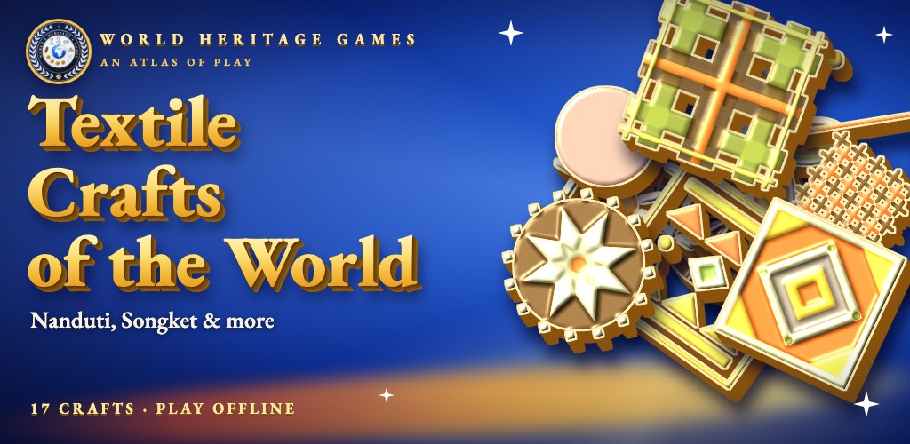
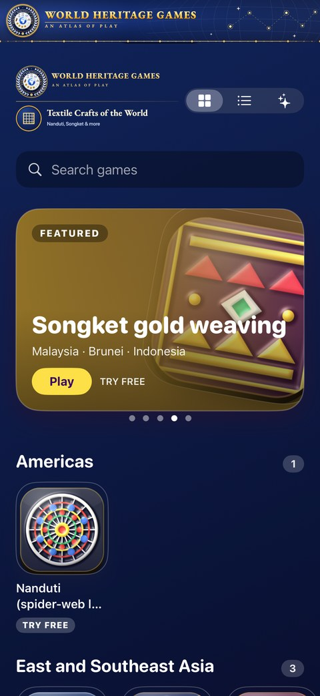
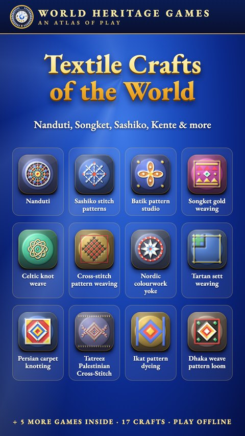
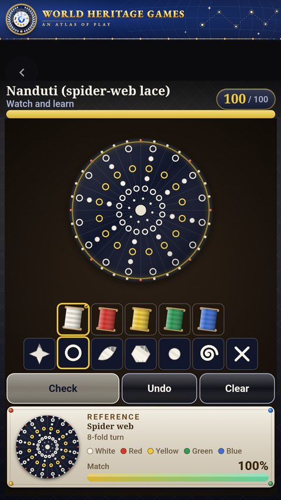
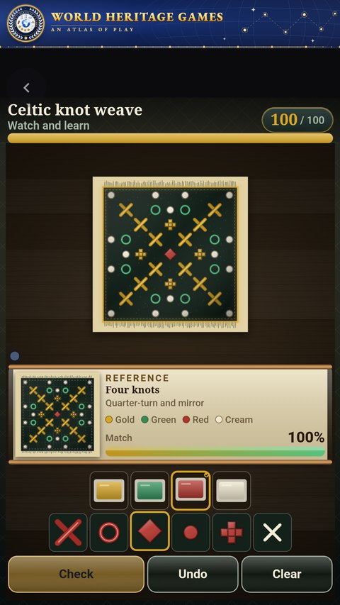
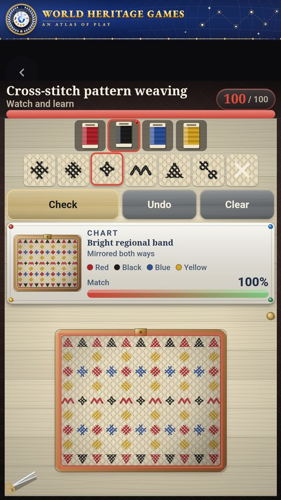

Mobile app · iPhone, iPad & Android
Textile Crafts of the World
17 textile crafts from 21 countries, each playable, each with the story of where it comes from. Build the Nanduti lace, a Songket cloth, a Kente strip, a Persian carpet and more.
- 17 textile crafts
- 21 countries
- Free 90-second preview
- No ads
- Works offline
- No account
In review on theApp StoreGet it onGoogle Play
Live on Google Play. Submitted to the App Store; in review, and the store link appears here the day it goes live.

The 17 textile crafts
Play a preview of each in your browser: it is the same game that runs in the app.


In the app





One purchase, every game
- Try each one freeEvery game opens with a free 90-second preview.
- $2.99, onceOne optional in-app purchase unlocks all 17 for good. No subscription, no ads.
- Learn as you playWatch a demonstration, read the rules, and see where each tradition comes from.

Get the app
Live on Google Play. Submitted to the App Store; in review, and the store link appears here the day it goes live. Support · Privacy
In review on theApp StoreGet it onGoogle Play